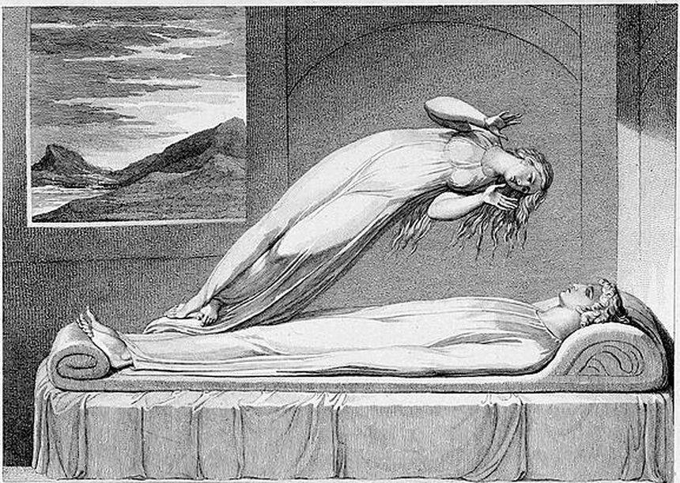

inconsciente
acontece, mas vc não lembra. segundo ele, é o mais comum: todo mundo "afrouxa as cordas" quando dorme.
um guia honesto pra quem acordou travada, ouviu zumbido, sentiu que flutuava ou quer tentar com calma. sem pânico, sem promessa, sem guru.
a frase do título resume uma ideia que o pesquisador Saulo Calderon repete muito. a gente estudou o trabalho dele pra montar esta página (créditos lá embaixo).

projeção astral, viagem astral, desdobramento, experiência fora do corpo (EFC): muitos nomes pra mesma vivência, a sensação nítida de estar consciente fora do corpo físico. Saulo Calderon costuma separar a experiência em três níveis:
acontece, mas vc não lembra. segundo ele, é o mais comum: todo mundo "afrouxa as cordas" quando dorme.
vc percebe em parte, mas o sonho ainda mistura tudo. é o território do sonho lúcido.
lucidez de verdade: pensamento ativo, clareza e memória do que viveu quando volta.
por isso o treino não é "aprender a sair". é aprender a lembrar e a manter a calma pra ficar lúcida.
se aconteceu com vc, respira. estes são os relatos mais comuns de quem estuda o tema:
importante: se a paralisia do sono acontece com frequência, vem com muito medo, atrapalha seu descanso ou aparece junto com sonolência forte durante o dia, procure um médico (de preferência especialista em sono). cuidar do corpo também é espiritualidade.
pra Saulo Calderon, o medo é a primeira dificuldade de todo iniciante, e faz parte do processo. o cérebro aprende aos poucos. e o humor ajuda mais do que qualquer ritual.
uma adaptação simples do "cronograma diário do projetor" que o Saulo ensina:
ao acordar, define a intenção: "hoje, em tal horário, vou praticar". sem ansiedade, como quem marca um compromisso.
comida leve, menos treta, mais água. última refeição umas 2h antes de deitar.
penumbra (nem claro, nem breu), sem mosquito, celular longe e todo mundo avisado pra não te chamar.
de costas, braços ao lado do corpo, pernas soltas e um pouco afastadas. solta rosto, mandíbula e mãos. sem forçar nada.
o desafio que o Saulo faz até pra quem não acredita em nada: toda noite, ao deitar, leva a atenção da cabeça aos pés e dos pés à cabeça. segundo ele, isso movimenta as energias e provoca a "descoincidência", quando vc começa a sentir coisas.
o Saulo sugere não insistir logo ao deitar: o corpo cansado só quer apagar. dorme normalmente e, se a sua rotina permitir:
não troque noite de sono por técnica. se acordar de madrugada te deixa exausta no dia seguinte, faz só no fim de semana.
desequilíbrio emocional crônico pesa mais do que qualquer técnica. cuidar da vida de dia é parte do treino.
tanto o dogma quanto o ceticismo extremo travam a experiência direta. o curso dele se apresenta como "treino, não crença".
querer demais e ter pressa. o processo pede relaxar, soltar e repetir com paciência.
na visão do Saulo, até podem "tirar" alguém do corpo, mas sem lucidez e sem memória. aqui a regra é simples: pratica sóbria.
anota tudo assim que acordar, antes de pegar o celular: sensações, sons, imagens, até o que pareceu bobo. a memória da experiência some rápido, e é o diário que transforma tentativa em aprendizado.
se vc está passando por crise de ansiedade ou pânico, depressão, luto muito recente, tem epilepsia, algum transtorno do sono ou faz acompanhamento psiquiátrico, converse antes com seu médico ou terapeuta. e se a experiência te deixar com medo constante ou sem dormir, pare. nenhuma prática espiritual vale mais do que a sua saúde.
pra Saulo Calderon, o risco é parecido com o de andar na rua: existem ambientes e "pessoas" de todo tipo, e a lucidez não cria o perigo, ela te dá autonomia pra perceber onde vc está. o curso dele trata medo, ansiedade e catalepsia "com maturidade, não como tabu". o cuidado com a saúde física e mental vem antes de tudo (veja o quadro acima).
é o medo mais comum. no relato do próprio Saulo, bastou o susto pra ele voltar na hora. quem pratica descreve a volta como quase automática: pensou no corpo, voltou.
a medicina descreve a paralisia do sono como um fenômeno de transição do sono, geralmente benigno. quem estuda projeção chama de catalepsia projetiva e usa como ponto de partida. vc não precisa escolher um lado, mas se acontece muito ou vem com sofrimento, procure um médico do sono.
não. o Saulo diz que o curso dele é "treinamento de percepção e método", pra fazer "com senso crítico e paciência". cada um interpreta a experiência à luz da própria fé, ou de nenhuma.
não damos curso. pra estudar a sério, indicamos o curso gratuito do Saulo Calderon (link aqui embaixo). o que a gente faz é leitura de tarot, baralho cigano e mapas: se um sonho ou sinal está mexendo com algo da sua vida (amor, trabalho, uma decisão), a leitura ajuda a olhar pra isso com calma.
“Não, o Espírito nunca está inativo. Durante o sono, os laços que o unem ao corpo se afrouxam, e, como o corpo não precisa dele, ele percorre o espaço e entra em relação mais direta com os outros Espíritos.”
“As preocupações da vigília podem dar ao que se vê a aparência daquilo que se deseja, ou daquilo que se teme.”
a estrutura desta página foi montada a partir do que Saulo Calderon ensina publicamente. ele é fundador do Grupo/Instituto Viagem Astral (GVA/IVA), estuda experiências fora do corpo há mais de duas décadas e mantém um curso gratuito, com o lema "espiritualidade sem pedágio". se vc quer ir a fundo, vá direto na fonte:
às vezes ele só está apontando pra algo da vida acordada. manda sua pergunta e a gente te diz qual leitura faz sentido, antes de qualquer pagamento.